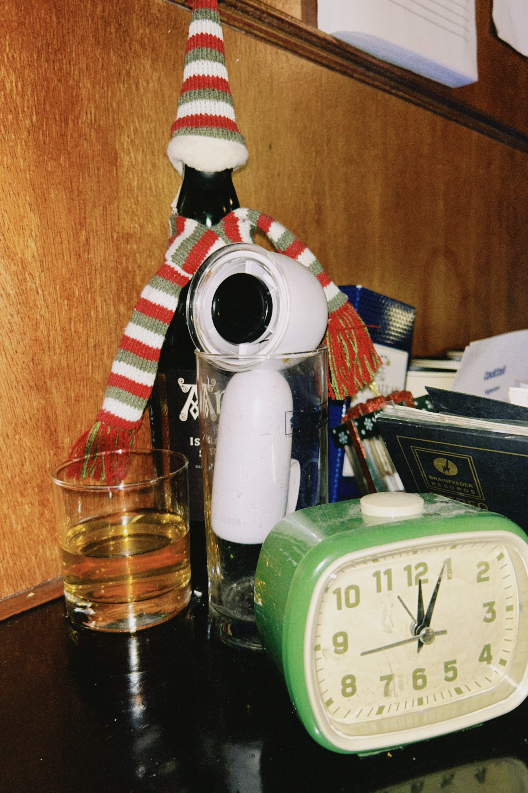
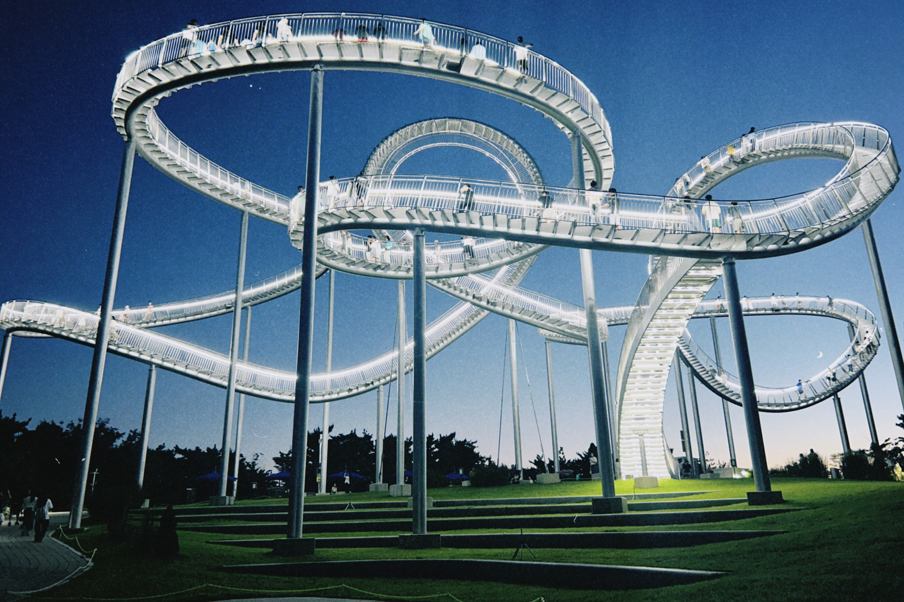
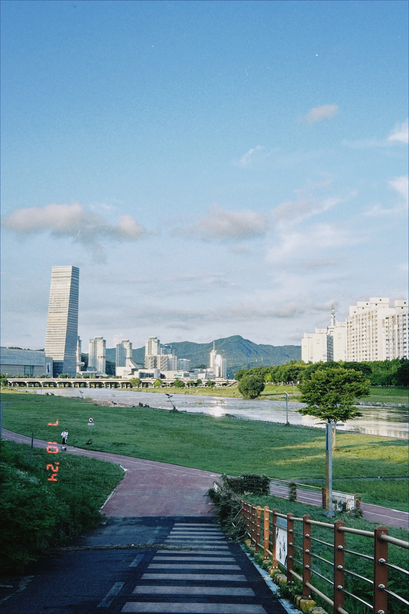
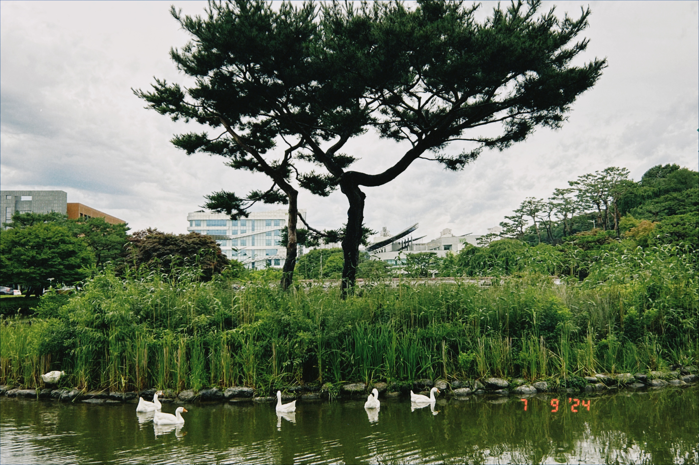
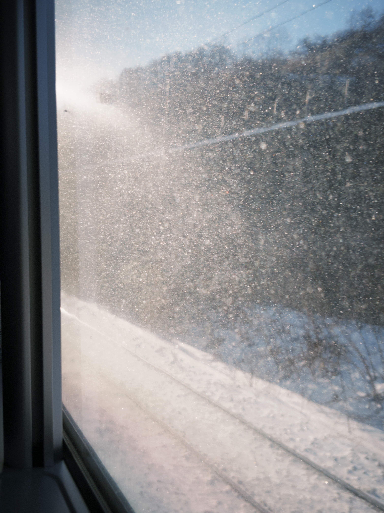
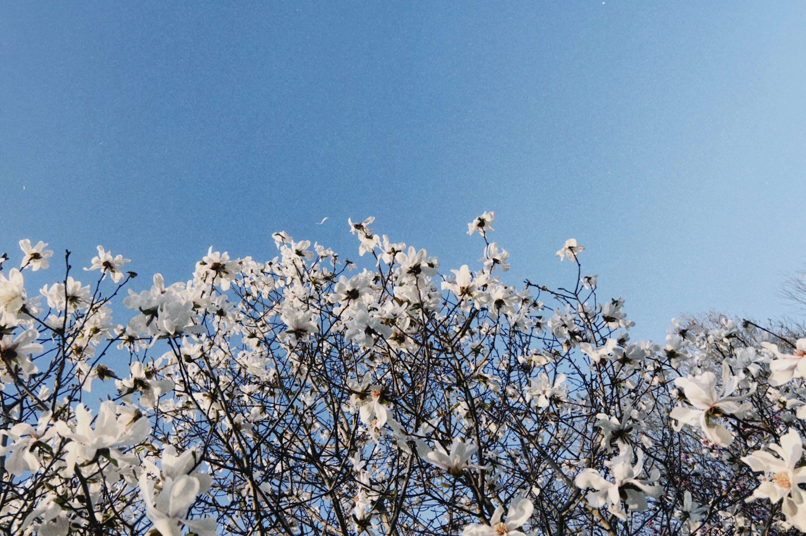
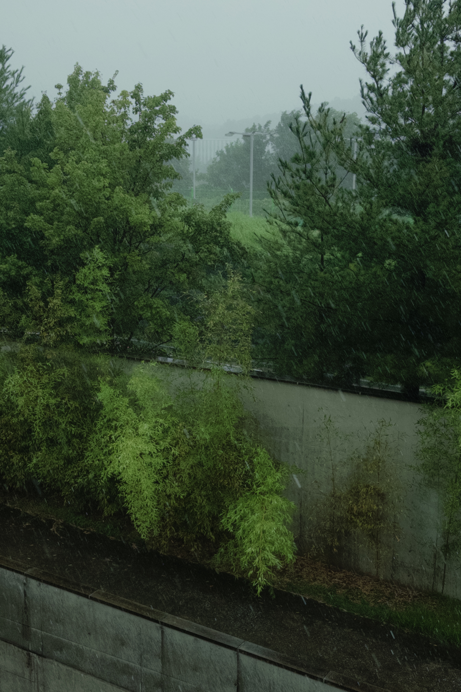
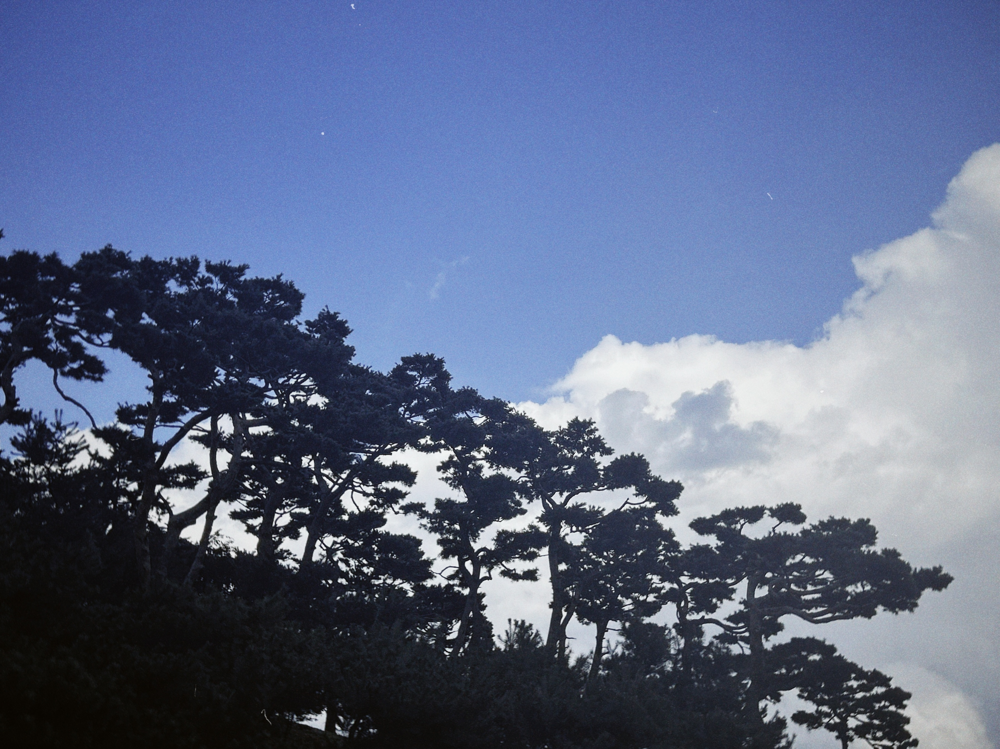
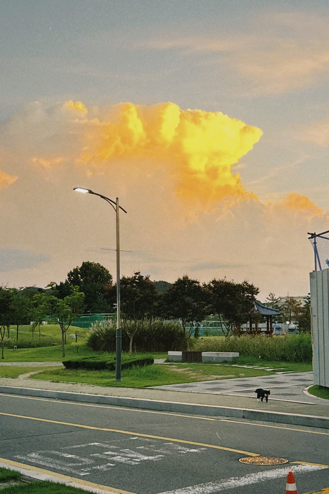

My name is Jikai, say it like Gee-kai.
My days keep a quiet rhythm. Mornings begin with cold brew. Afternoons turn to tea, jasmine folded into green.
I have come to love climbing hills, and sitting a while before the sea. Korea has been kind in this respect: there is always another mountain to walk up, and the water is never quite far.
I am drawn to film, and to things that carry its texture: grain, soft light, a moment held still. Below are a few frames.









Some materials from my earlier undergraduate competitions and scholarship applications may be useful as references. I have kept them here in case they help.